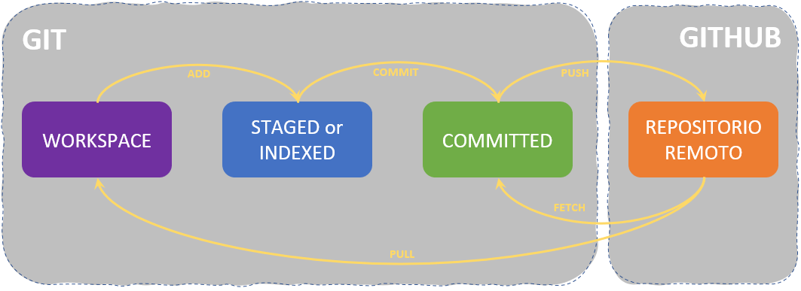

| Item | Comentario | ||
|---|---|---|---|
Inicializar un nuevo repositorio GIT en Visual Studio Code |
|||
| 1 | VSC File / Open Folder... | Inicializar la Carpeta Raíz del repositorio en la PC | |
| 2 | VSC Terminal / New Terminal | Abre la terminal para ingresar a la Terminal GIT Bash para ejecutar los comandos | |
| 3 | VSC +v / Git Bash | Selecciona la terminal GIT Bash para ejecutar los comandos | |
| 4 | $ git --version | Asegurar que GIT esta instalado en la PC, mostrando la versión instalada | |
| 5 | $ git init | Inicializa el repositorio de GIT creando en esa Carpeta una Subcarpeta ".git" | |
| 6 | $ git config --global user.name "Nombre Apellido" | Configura el global username luego de instalar GIT | |
| 7 | $ git config --global user.mail "MiNombre@ejemplo.com" | Configura el global usermail luego de instalar GIT | |
| 8 | $ git add * | Prepara el conjunto de archivos a añadir al repositorio de GIT creado en esta carpeta | |
| 9 | $ git commit -m "Versión V##" | Confirma el ingreso al repositorio de GIT de los archivos pre-añadidos | |
| 10 | $ git push origin master | Sube los cambios del repositorio de GIT a GIT-HUB | |
Linkear un repositorio GIT <==> GIT-HUB |
|||
| 1 | New Repository en GIT-HUB | Crear el nuevo repositorio en GIT-HUB. Luego tomar la dirección https (https://github.com/<cuenta>/<nombre>.git) para utiliza en el paso 2 | |
| 2 | $ git remote add origin https://github.com/<cuenta>/<nombre>.git | Define la ruta del repositorio remoto de GIT-HUB para sincronizar con el local | |
| 3 | $ git branch -M main | Crea el branch main | |
| 4 | $ git push -u origin main | Tomara unos minutos para sincronizar el repositorio local con el de github.com | |
Otros Comandos de GIT |
|||
| $ git help comando | Abre la ayuda en línea del comando en una nueva solapa del explorador | ||
| $ git status | En cualquier momento, muestra el estado de los cambios del repositorio de GIT y propone algunas acciones | ||
| $ git checkout -- arch.ext | En cualquier momento, restaura el archivo arch.ext desde la última versión en el repositorio de GIT | ||
| $ git checkout branch | Cambia el espacio de trabajo al branch del repositorio de GIT | ||
| $ git diff -- arch.ext | En cualquier momento, muestra las diferencias del archivo arch.ext contra la última versión en el repositorio de GIT | ||
| $ git log | En cualquier momento, muestra el log de versiones en el repositorio de GIT | ||
